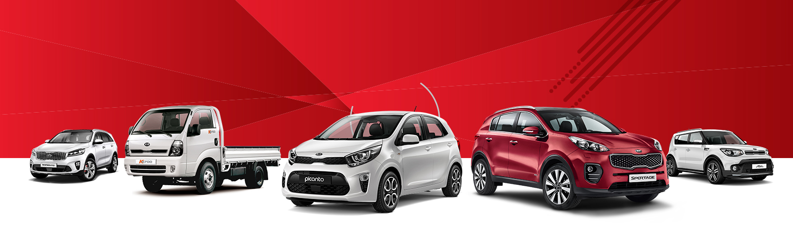

Fundada en 1944, Kia Motors es la marca de automóviles más antigua de Corea. Con una rica historia de más de 75 años, hemos crecido hasta convertirnos en uno de los principales fabricantes de automóviles del mundo, produciendo más de tres millones de vehículos anualmente en 14 plantas de fabricación en cinco países.
Nuestra misión es ofrecer soluciones de movilidad sostenible que inspiren y ofrezcan experiencias únicas a nuestros clientes en todo el mundo. Nos esforzamos por crear vehículos que sean innovadores, ecológicos y seguros, manteniendo siempre la calidad y la fiabilidad como nuestras prioridades.
Nos vemos como líderes en la industria automotriz del futuro, centrados en el desarrollo de vehículos eléctricos, autónomos y conectados. Aspiramos a ser una marca que no solo satisface las necesidades de movilidad de nuestros clientes, sino que también contribuye positivamente a la sociedad y al medio ambiente.
En Kia, nos comprometemos a superar las expectativas de nuestros clientes y a liderar la industria automotriz hacia un futuro más sostenible y tecnológico. Nos enorgullecemos de nuestra herencia y estamos emocionados por lo que está por venir.